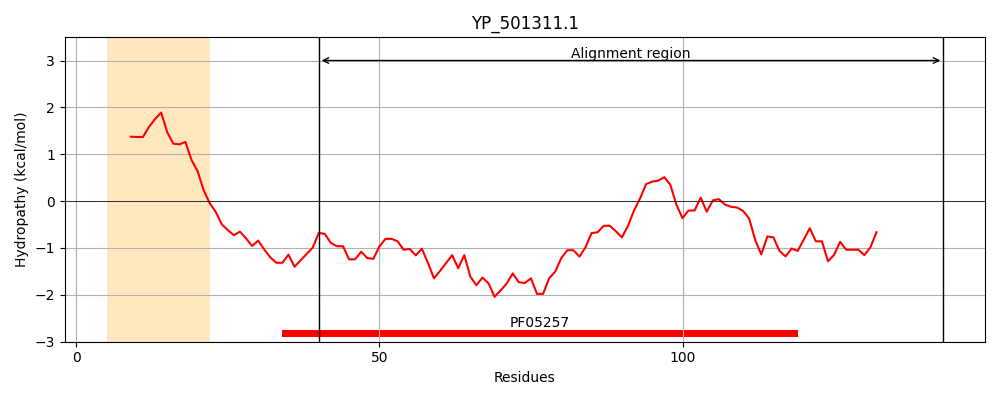
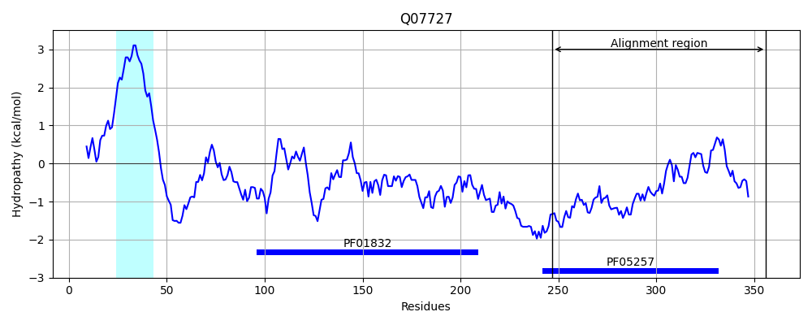
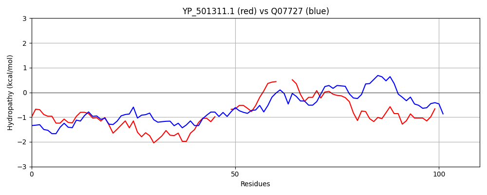

Hit Accession: Q07727
Hit TCID: 3.A.7.7.1
Hit Description: gnl|BL_ORD_ID|12297 gnl|TC-DB|Q07727|3.A.7.7.1 TrsG protein - Staphylococcus aureus.
Mach Len: 110
e:0.000000
Query TMS Count : 1
Hit TMS Count: 1
TMS-Overlap Score: 0.000000
Predicted Substrates:CHEBI:4291;deoxyribonucleic acid
BLAST Alignment:
| Protein Hydropathy Plots: | |
|---|---|
|  |  |
Pairwise Alignment-Hydropathy Plot: | |
|  | |